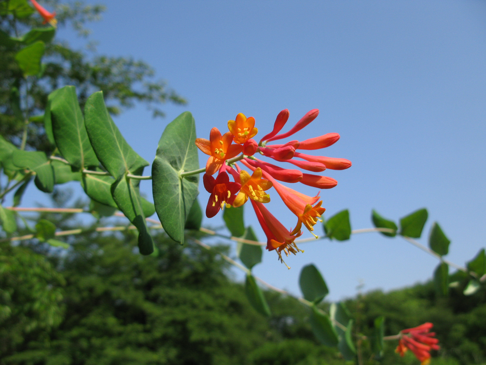
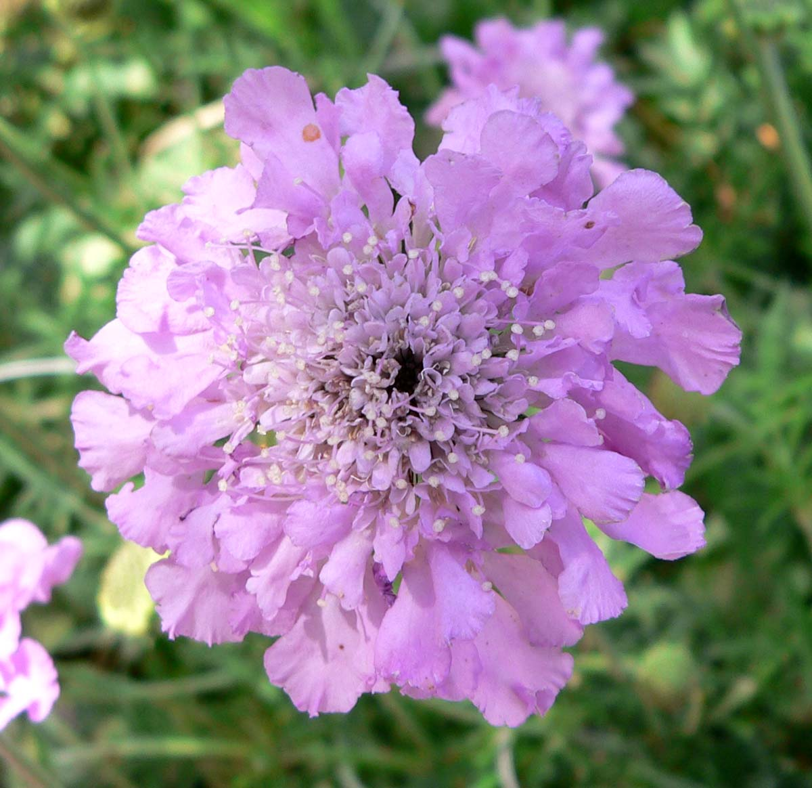
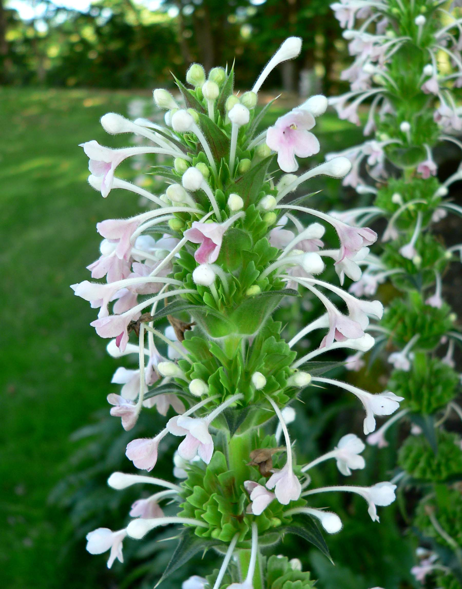
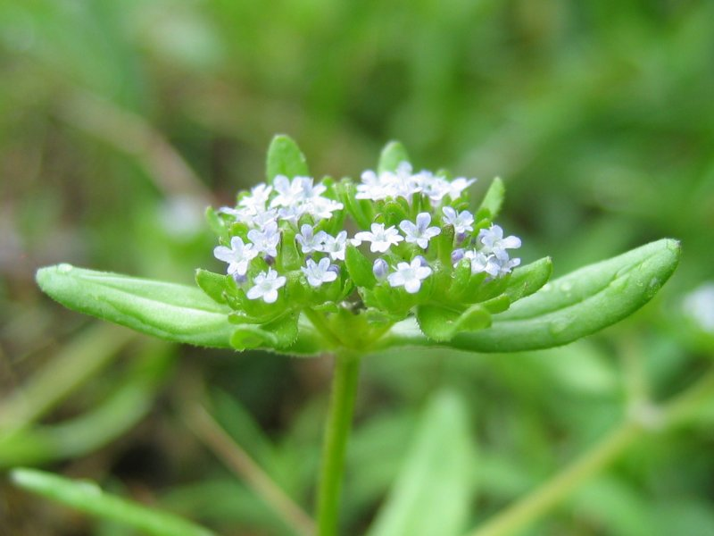
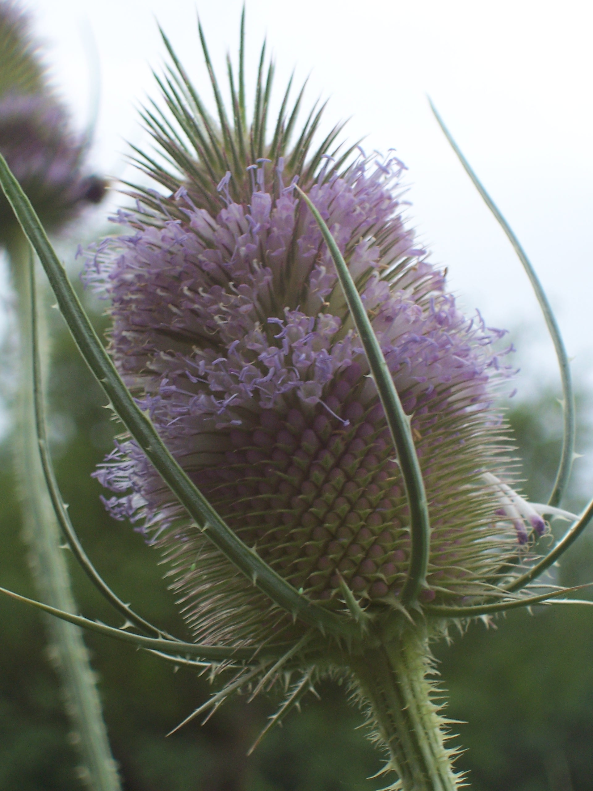

Caprifoliaceae
honeysuckle family
|  Lonicera sempervirens (coral honeysuckle) from Wikimedia Commons by Qwert1234, CC BY-SA 3.0 |
 Scabiosa columbaria (small scabious) from Wikimedia Commons by Stan Shebs, CC BY-SA 3.0 |
|  Morina longifolia from Wikimedia Commons by Stan Shebs, CC BY-SA 3.0 |
 Valeriana locusta (cornsalad) from Wikimedia Commons by Kristian Peters -- Fabelfroh 12:15, 6 September 2006 (UTC) - Self-photographed, CC BY-SA 3.0 |
{kind=link}
{kind=link}
{kind=link}
{kind=link}
botanical characteristics
Botany in a Day, p. 175-7 | "Caprifoliaceae", Wikipedia
- growth form
- mostly shrubs and vines, rarely herbs
- stems/leaves
- pithy stems (like styrofoam)
- opposite leaves
- flowers
- bisexual flowers usually 5 united sepals, 5 united petals (sometimes 4 of each)
- reproductive structures
- 5 stamens (sometimes 4)
- ovary positioned inferior
- 2-8 united carpels
- fruit matures as a fleshy berry, a drupe, or an achene
distribution
"Caprifoliaceae", Wikipedia
- 860 species in 33-42 genera, with a nearly cosmopolitan distribution
- centres of diversity are found in eastern North America and eastern Asia, while they are absent in tropical and southern Africa
- some species have become invasive weeds outside their native ranges
ecological roles
"Honeysuckle", Wikipedia | "Dipsacus", Wikipedia | "Scabiosa", Wikipedia
- many insects in the order Lepidoptera visit honeysuckles (Lonicera) as a food source
- the nocturnal moth Deilephila elpenor is especially attracted to honeysuckles, and they visit the flowers at night to feed on their nectar
- teasel (Dipsacus) seeds are an important winter food resource for some birds, notably the European goldfinch; teasels are often grown in gardens and encouraged on some nature reserves to attract them
- Dipsacus species shown to be protocarnivorous
- scabious (Scabiosa) flowers are rich in nectar and attractive to many insects including butterflies and moths such as the six-spot burnet
- Scabiosa species are food plants for the larvae of some species of Lepidoptera such as the grey pug moth
common pharmacological constituents
"Angiosperm families - Caprifoliaceae Juss.", DELTA
- cyanogenic, or not cyanogenic; cynogenic constituents phenylalanine-derived; alkaloids present, or absent; arbutin absent; iridoids detected; ‘Route I’ type (normal and seco); proanthocyanidins present, or absent; when present, cyanidin; flavonols present (mostly), or absent (Abelia); kaempferol and quercetin (mostly), or quercetin; ellagic acid absent (11 species, 7 genera); aluminium accumulation not found
"Angiosperm families - Dipsacaceae Juss.", DELTA
- inulin recorded; not cyanogenic; alkaloids present (commonly), or absent; verbascosides not detected; iridoids detected; ‘Route I’ type (normal and seco); saponins/sapogenins present (rarely), or absent; proanthocyanidins absent; flavonols absent; ellagic acid absent (3 species, 3 genera); aluminium accumulation not found
"Angiosperm families - Valerianaceae Batsch.", DELTA
- not cyanogenic; alkaloids present, or absent (4 species listed); iridoids detected; ‘Route I’ type (normal and seco); proanthocyanidins absent; flavonols present; kaempferol (trace); ellagic acid absent (Valeriana); aluminium accumulation not found
patterns in medicinal actions
- stimulating effect on the digestive and circulatory systems, creating space
- on the digestive system through emetic and laxative actions
- on the cardiovascular system, by diuresis, strengthening the heart, and dilating the blood vessels to lower blood pressure
- on the smooth muscles of the body through toning and antispasmodic actions
- even with valerian, some individuals experience only a stimulating action on the nervous system instead of a sedative action - perhaps there is a related process of stimulation leading to the space required to induce sleep
traditional/cultural uses
Botany in a Day, p. 175-7
- Dipsacus (teasel) superficially resembles a thistle and its spiky flowerheads were once used to raise the nap on new woolen textiles ('teasing')
- teasel has been used as a gentle circulatory stimulant that tones the liver and kidneys, strengthens the bones and tendons, and is used with chronic/inflammatory conditions like sore/stiff muscles, arthritis, and Lyme disease
- Knautia (blue buttons) has been used externally to clear injuries and internally as an alterative
- Valeriana (valerian) sedates the central nervous system and stimulates the digestive and circulatory systems
- leaves of Valerianella (cornsalad) are cultivated and eaten as food
- Linnea (twin flower) used as a tonic for painful or difficult menstruation
- berries of most species Lonicera (honeysuckle) are edible, and the leaves and root have been used medicinally as an emetic, expectorant, and laxative
- Symphoricarpos (snowberry/ghostberry) has astringent properties and is used externally as a poultice or an eye wash
- snowberry contains saponins, making it usable as a soap substitute, fish poison, or an emetic
- Triosteum (feverwort) leaf tea used as a diaphoretic; the root is used as a diuretic, a laxative, for menstrual disorders, and externally for snakebites and sores
warnings
- as a family, no known consistent warnings
extra information
Botany in a Day, p. 175-7
- Adoxaceae (moschatels) previously part of Caprifoliaceae
- Caprifoliaceae now includes Dipsacaceae (teasels) and Valerianaceae (valerians)
prominent genera
- Dipsacus (teasels)
- Linnaea (twinflowers)
- Lonicera (honeysuckles)
- Symphoricarpos (snowberries/ghostberries)
- Triosteum (feverworts)
- Valeriana (valerians)
plant highlights
see list of materia medica entries here
Dipsacus asper
|  from Wikimedia Commons by Renardeau, CC BY-SA 2.0 |
common names: teasel en español: cardo |
{kind=link}
description
"Dipsacus", Wikipedia
- prickly stem and leaves
- inflorescence of purple, dark pink, lavender or white flowers that form a head on the end of the stem(s)
- the inflorescence is ovoid with a basal whorl of spiny bracts
- the first flowers begin opening in a belt around the middle of the spherical or oval flowerhead, and then open sequentially toward the top and bottom, forming two narrow belts as the flowering progresses
- the dried flower head persists afterwards, with the small seeds maturing in mid autumn
- in rainy weather, some seeds may germinate when still in the seedhead (vivipary)
distribution
"Dipsacus and Scabiosa Species", PubMed Central
- native to China, Korea, Japan, Myanmar
medicinal/magical uses
The Modern Herbal Dispensatory, p. 310
- kidney tonic, vulnerary, cooling, drying
- teasel root has been used for muscle and joint pain and as a tonic to aid the repair of damaged tissues
- used to treat Lyme disease, helpful for pain management and relief of symptoms
preparation methods
The Modern Herbal Dispensatory, p. 310
- infusion
- tincture
warnings
- no known warnings
sources
"Angiosperm families - Caprifoliaceae Juss." on DELTA - DEscription Language for TAxonomy. Retrieved 20 August 2025.
"Angiosperm families - Dipsacaceae Juss." on DELTA - DEscription Language for TAxonomy. Retrieved 20 August 2025.
"Angiosperm families - Valerianaceae Batsch." on DELTA - DEscription Language for TAxonomy. Retrieved 20 August 2025.
"Caprifoliaceae" on Wikipedia. Retrieved 20 August 2025.
"Dipsacus" on Wikipedia. Retrieved 20 August 2025.
"Dipsacus and Scabiosa Species—The Source of Specialized Metabolites with High Biological Relevance: A Review" on PubMed Central. Retrieved 20 August 2025.
Easely, Thomas and Steven Horne. The Modern Herbal Dispensatory (2016)
Elpel, Thomas J. Botany in a Day: The Patterns Method of Plant Identification (2021)
Goldberg Blackthorn, Samantha. Ace of Cups Herbal Medicine and Botanical Magic Herbal School (2024)
"Honeysuckle" on Wikipedia. Retrieved 20 August 2025.
"Scabiosa" on Wikipedia. Retrieved 20 August 2025.